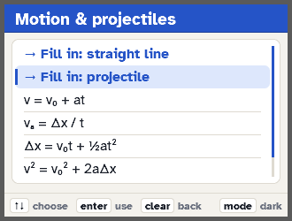

How to solve projectile motion on a TI-84 Plus CE
Worked example: a plane flying level at 150 km/h drops a package from 500 m. How long does it fall, how far forward does it land, and how fast is it going at impact?
The formulas
Sideways speed stays the same: Δx = v₀ₓt. Up and down is free fall with a = −9.8 m/s²: Δy = v₀ᵧt − ½gt², vᵧ = v₀ᵧ − gt. Final speed: v = √(v₀ₓ² + vᵧ²).
By hand
Dropped level, so v₀ᵧ = 0 and Δy = −500 m. Fall time: t = √(2 × 500 / 9.8) = 10.1 s. Speed sideways: 150 km/h ÷ 3.6 = 41.67 m/s, so Δx = 41.67 × 10.10 = 421 m. Then vᵧ = −9.8 × 10.10 = −99.0 m/s and v = √(41.67² + 99.0²) = 107 m/s.
On the calculator with PHYSPRO
Open Motion & projectiles → Fill in: projectile, type only what the problem gives (Δy = −500, v₀ₓ = 150/3.6, v₀ᵧ = 0) and press GRAPH. It finds all 8 unknowns and shows the work for each.



Solve these on your TI-84 Plus CE
PHYSPRO has every formula on this page. Type what the problem gives you and it solves for all the missing values, showing the plug-in line with units and the sig figs. Free.
Get PHYSPRO freeDid it help? Tip $1 on Venmo: @FormulaFoundry